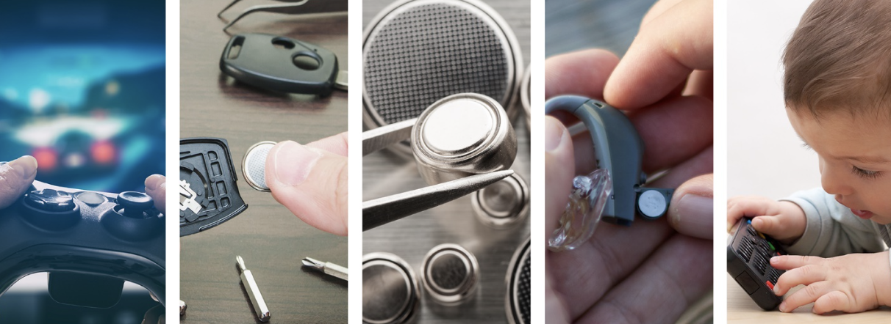
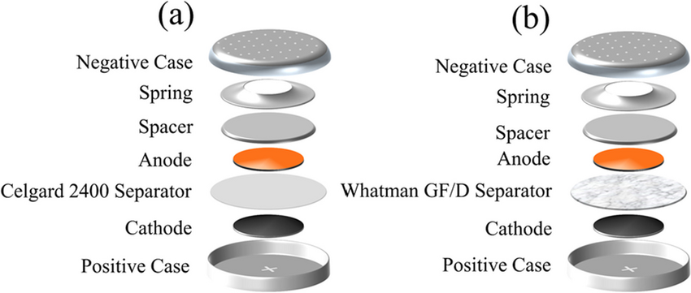

Button cell batteries, also known as coin cell batteries, are compact energy sources used in a wide array of modern devices. From hearing aids and watches to remote controls and medical instruments, these small yet powerful components play a crucial role in our daily lives.
A button cell battery, also known as a coin cell battery, is a small, round, and flat single-cell battery typically used in compact electronic devices that require a low and consistent power supply. The name "button cell" comes from its button-like shape, while "coin cell" emphasizes its similarity in size and shape to coins.
| Chemistry Type | Voltage | Characteristics | Typical Applications |
|---|---|---|---|
| Alkaline | 1.5V | Low cost, moderate capacity, may leak over time | Toys, laser pointers, calculators |
| Silver Oxide | 1.55V | Stable voltage, longer life, higher cost | Watches, medical devices, hearing aids |
| Lithium (MnO₂) | 3V | High energy density, long shelf life | Key fobs, remote controls, motherboards |
| Zinc-Air | 1.4V | Air activated, high capacity | Hearing aids |
Button cells generate electricity through an electrochemical reaction between the anode (negative) and cathode (positive), with an electrolyte in between. The chemistry determines voltage and performance. Typical components include:
These batteries generate electricity through electrochemical reactions between an anode and a cathode, separated by an electrolyte. The chemical composition determines the battery's voltage, capacity, and shelf life.
The first button cells were developed in the 1950s to address the need for compact batteries in analog wristwatches. Over the decades, technological advances in chemistry and miniaturization have led to safer, longer-lasting, and more environmentally friendly variants.
Button batteries are used in:
| Model | Type | Voltage | Dimensions (mm) | Applications |
|---|---|---|---|---|
| LR44 | Alkaline | 1.5V | 11.6 × 5.4 | Toys, laser pointers, watches |
| SR44 / 357 | Silver Oxide | 1.55V | 11.6 × 5.4 | Medical tools, watches |
| CR2032 | Lithium | 3V | 20 × 3.2 | Motherboards, key fobs, remote controls |
| CR2025 | Lithium | 3V | 20 × 2.5 | Scales, car keys |
| CR2016 | Lithium | 3V | 20 × 1.6 | Watches, remotes |
| LR1130 | Alkaline | 1.5V | 11.6 × 3.0 | Small devices, toys |
| SR1130 | Silver Oxide | 1.55V | 11.6 × 3.0 | Medical tools, watches |
| LR41 | Alkaline | 1.5V | 7.9 × 3.6 | Thermometers, toys |
| SR41 / 392 | Silver Oxide | 1.55V | 7.9 × 3.6 | Watches, calculators |
| L1154 | Alkaline | 1.5V | ≈ LR44 | Toys, remote controls |
Modern advancements include leak-proof designs, mercury-free chemistries, and higher-capacity lithium variants. Some manufacturers are also integrating smart chips for monitoring battery life in advanced applications. Button cell batteries have evolved significantly since their introduction in the mid-20th century, initially developed for compact analog watches. Over the decades, advancements in chemistry have led to longer-lasting and more stable battery types such as silver oxide and lithium manganese dioxide. Mercury, once commonly used, has been phased out due to environmental concerns, giving way to mercury-free, eco-friendly alternatives. Modern innovations focus on increasing energy density, improving leak resistance, and extending shelf life. Additionally, developments in solid-state and microbattery technologies are paving the way for smarter, safer, and more sustainable button cells, particularly for use in medical wearables, IoT sensors, and miniaturized electronics.
With the rise of IoT, wearable tech, and medical monitoring devices, the demand for compact and safe power sources continues to grow. Innovations in solid-state batteries and biodegradable materials may shape the next generation of coin cells. The future of button cell batteries is closely tied to the rapid growth of miniaturized and wearable electronics. As demand increases for compact, high-performance power sources, future developments will focus on enhancing energy density, improving safety through solid-state designs, and integrating smart monitoring features. Eco-friendly innovations—such as biodegradable materials and mercury-free chemistries—will become more prominent. Additionally, button cells may evolve to support wireless recharging and better performance in extreme environments, making them essential components in next-generation medical devices, IoT applications, and smart consumer technologies.